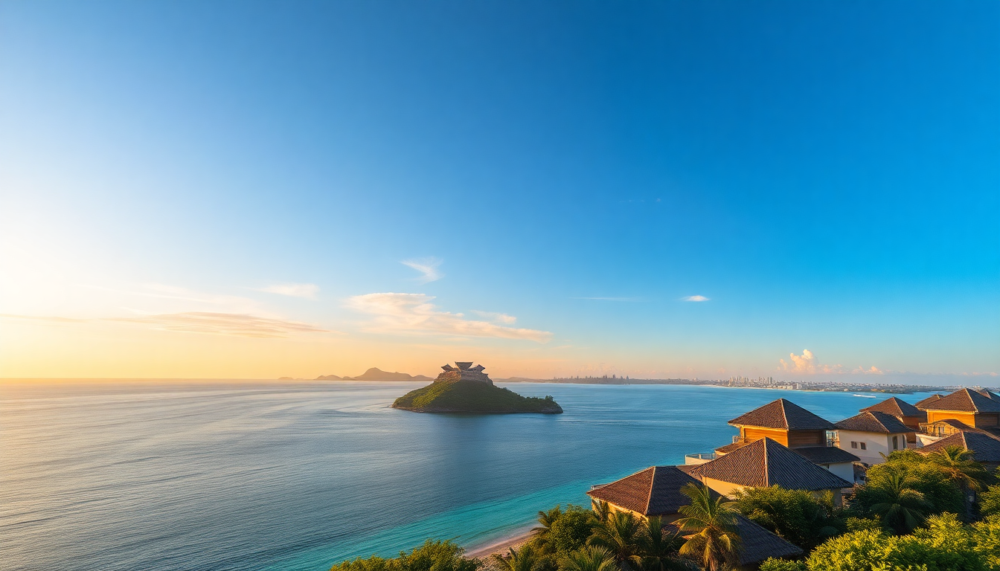

Best Time to Visit Maldives: Month-by-Month Guide

I’ve spent weeks island-hopping across the Maldives, from the packed guesthouses of Male to the quiet overwater bungalows in Ari Atoll. The best time to go depends on what you want: dry sun for diving, lower prices for budget stays, or avoiding the monsoon washout. Here’s the real breakdown, month by month.
What’s the weather like in the Maldives year-round?
The Maldives has two seasons: dry (northeast monsoon, December to April) and wet (southwest monsoon, May to November). Dry season means blue skies, calm seas, and peak prices. Wet season brings rain, stronger currents, and cheaper rooms—but also better surf and fewer tourists.
I’ve been in both. January in North Male Atoll was perfect—sunny every day, water like glass. June in Ari Atoll? Rain squalls rolled in by noon, but the diving was excellent because plankton drew in manta rays.
- Dry season (Dec–Apr): Best for snorkeling, diving, and resort stays. Expect 28–30°C temps.
- Wet season (May–Nov): Lower rates, greener islands, and bigger waves for surfers. Still gets 7+ hours of sun most days.
When is the best time to visit the Maldives for good weather?
December through April is the sweet spot. I’d pick March—least wind, clearest water, and still tolerable humidity. In Male, the streets were dry and the ferry schedules reliable. In South Male Atoll, we saw whale sharks on two separate snorkel trips without a rain delay.
Avoid May and June if you’re set on beach lounging. The rain isn’t constant, but it’s unpredictable. I got stuck in a downpour at a café in Male—good coffee at Sala Thai Café, but not the island vibe I wanted.
- March: My top pick. Calm seas, visibility over 30 meters at Maaya Thila in Ari Atoll.
- December: Busy but festive. Book Hotel Jen Male early if you need a pre-resort night.
- January: Peak crowds. Resorts in North Male Atoll like Anantara Veli fill up fast.
What are the cheapest months to visit the Maldives?
May through October is low season. I scored a room at Kurumba Maldives in North Male Atoll for half the December rate in September. The trade-off: more clouds and the occasional full-day rain.
June and July are the wettest, but also the quietest. If you’re on a budget, stay at a guesthouse in Thulusdhoo (South Male Atoll) for under $100 a night. The surf is pumping, and you’ll share the break with locals, not resort guests.
- September: Cheapest flights. I paid $500 round-trip from Dubai.
- May: Shoulder month—still decent weather, dropping prices.
- July: Rainiest, but you can find Biyadhoo Island Resort deals for 40% off.
When should I visit for diving and marine life?
Diving is best in the dry season (December to April), but specific months matter for specific animals. In Ari Atoll, manta rays peak from June to November—the wet season. I saw a dozen mantas in one dive at Rangali Island in August, despite the rain.
Whale sharks are year-round in South Male Atoll, but March and April give the best visibility at South Male Atoll Marine Protected Area. For reef sharks and turtles, January in North Male Atoll around Banana Reef is unbeatable.
- Manta rays: June–November in Ari Atoll. Book a trip with Maldives Manta Project.
- Whale sharks: March–April in South Male Atoll. Whale Shark Maldives tours run daily from Maafushi.
- Reef diving: December–April. Top sites: Manta Point (North Male) and Fish Head (Ari).
What about holidays and crowds in the Maldives?
Christmas and New Year’s are the busiest. I saw prices triple at Sheraton Maldives Full Moon Resort in North Male Atoll. If you want a quiet trip, avoid late December and Easter week.
Ramadan (dates shift yearly) slows things down in Male. Restaurants close during the day, and ferry schedules shrink. But resorts on private islands are unaffected—I stayed at Constance Moofushi in Ari Atoll during Ramadan and didn’t notice a difference.
- Christmas/New Year: Book 6 months ahead. Expect minimum 5-night stays at most resorts.
- Easter: Family-heavy. Cinnamon Dhonveli Maldives in North Male gets packed.
- Ramadan: Quiet in Male. Belle Amour Bistro stays open for tourists near the airport.
Is the Maldives good in the shoulder months?
April and November are the true shoulder months. April can still be dry, but humidity spikes. I sweated through a walking tour of Male’s Old Friday Mosque in April—worth it, but bring water.
November is transitional. Rain tapers off, and resorts start raising prices for December. I had mixed weather in Ari Atoll—sunny mornings, afternoon showers—but fewer crowds at Vilamendhoo Island Resort.
- April: Last month of dry season. Great for diving, but hot (32°C).
- November: Green islands, lower rates. Sun Island Resort in South Male had 50% occupancy when I visited.
FAQ
Is the Maldives rainy in July? Yes, July is the wettest month. Expect rain on 15–20 days, but it often comes in short bursts. I still got in morning dives in Ari Atoll before the clouds rolled in. Surfers love July for the bigger swell at Chickens break in North Male Atoll.
Can I visit the Maldives on a budget in peak season? Not easily. Peak season (December–April) pushes guesthouse prices in Male and Maafushi to $150–$200 a night. You’ll save by staying at a local island like Rasdhoo in Ari Atoll, but ferries are less frequent. Book flights in February for lower airfare.
What’s the best month for honeymooners? March. Dry weather, calm seas, and fewer families than December. I recommend Gili Lankanfushi in North Male Atoll for the private overwater villas. Book dinner at Muraka Restaurant for sunset views without the Christmas markup.
Conclusion
- Best overall weather: March and April—calm seas, clear skies, top diving.
- Cheapest months: May–October. Stay at guesthouses in Thulusdhoo or Rasdhoo.
- Best for marine life: June–November for mantas (Ari Atoll), March–April for whale sharks (South Male Atoll).
- Avoid if you hate crowds: Late December and Easter week. Resorts and ferries are packed.
- Shoulder month pick: November—lower rates, green islands, fewer tourists.